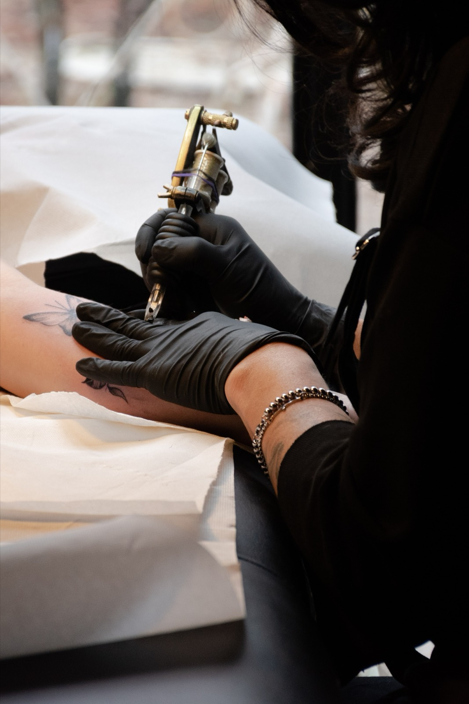

Tattoo Machines
We use wireless tattoo machines to provide the best service possible. With no cord pulling on the artist's hand, the chance of a small error is almost negligible. We use the FK Irons Flux, Critical X Bishop Power Wands and Cheyenne Sol Nova Unlimited, to name a few. These machines run for almost 10 hours, so one can last an entire workday.
